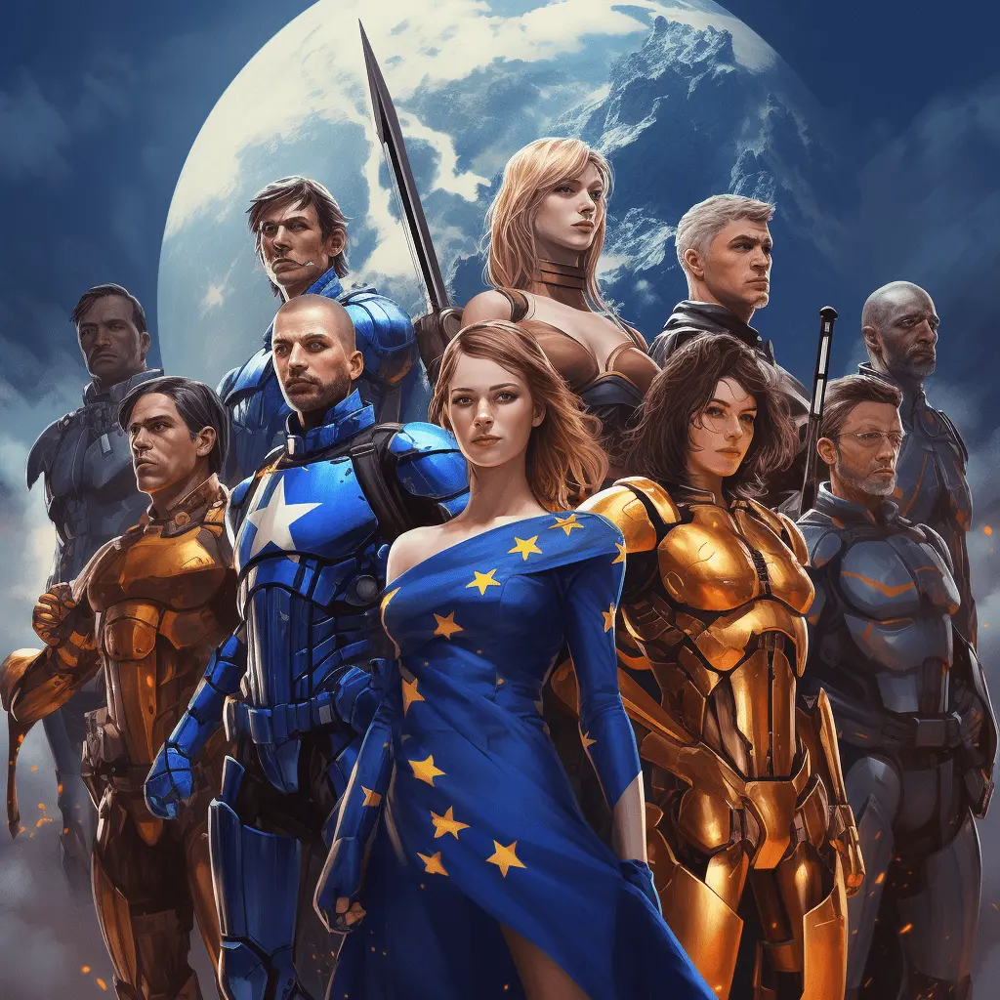

Warum gibt es keine Avengers in der Politik?

Blog, 27/06/2023, von Sven Franck
Vor einigen Wochen hat Bernard Cazeneuve offiziell La Convention ins Leben gerufen und sich als Präsidentschaftskandidat positioniert, um die Linke um eine rosa-igere Interpretation der Sozialdemokratie zu vereinen. Er ist weder der erste noch der letzte, der seine Ambitionen ankündigt: Ob Xavier Bertrand mit Nous France auf der konservativen oder Raphaël Glucksmann mit Place Publique auf der sozialdemokratischen Seite - ein Jahr vor den Europawahlen und während die meisten Augen bereits auf 2027 gerichtet sind, beginnt die französische Politik erneut mit ihrer ewigen Suche nach dem Äquivalent von Frankreich sucht den Superstar - der Persönlichkeit, die das Land vereinen und zu seinem quintessenziellen Führer werden wird - in der Theorie.
Eine Verfassung, um die Macht des Präsidenten zu beschränken?
Wir tun dies seit der Schaffung der Fünften Republik, die speziell dafür konzipiert wurde, unseren Präsidenten zu ermöglichen, mit absoluten Mehrheiten und weitreichenden Befugnissen zu regieren, die weit über die der Demokratien anderer europäischer Länder hinausgehen. Zum Besseren oder, nach diesem Fünfjahreszeitraum zu urteilen, zum Schlechteren? Wir können nicht leugnen, dass wir allmählich die Grenzen unserer Verfassung erkennen, die es einem Präsidenten ermöglicht, die Nationalversammlung und viele der Sicherheitsnetze zu umgehen, die in einer Demokratie bestehen sollten, um zu gewährleisten, dass "Checks and Balances" sowohl die Bürger als auch unsere Institutionen schützen. Ob einem die Rentenreform nun gefällt oder nicht, die Art und Weise, wie sie verabschiedet wurde, schafft einen Präzedenzfall dafür, dass künftige Machthaber ihre Agenda durchsetzen können - selbst mit einer Minderheit in der Nationalversammlung. Die italienische Verfassung schränkt die Befugnisse von Präsidentin Meloni ein. Die französische Verfassung wird jede nationalistische oder extremistische Agenda noch verschärfen. Im Élysée-Palast sind die Würfel gefallen: Stellen Sie sich vor, Melenchon würde die Verbindungen zu Europa abbrechen, oder noch schlimmer, Marine Le Pen würde 2027 die Macht übernehmen.
Personenkult oder Regierung?
Die Botschaft ist klar: Nicht nur die republikanische Front braucht weitere Verstärkung und politische Erneuerung, um die Chancen auf stabile Mehrheiten zu erhöhen. Es wird zudem deutlich, dass wir das Mindesthaltbarkeitsdatum für die Wahl einer einzigen Person, die das Land vereint und führt, möglicherweise schon überschritten haben. Ich bin entsetzt über die Wähler, die für Marine Le Pen stimmen, weil sie eine Frau ist und auf dem Plakat präsidial aussieht. Ich möchte wissen, wohin uns ein Präsident führen wird. Mit Emmanuel Macron scheint es kein gelobtes Land zu geben. Und ich befürchte, dass es 2027 mit einem der extremistischen Kandidaten entweder mit Vollgas in eine Wand oder über eine Klippe gehen wird.
Mir scheint, dass ich nicht allein bin. Die Wahlenthaltungen sprechen eine deutliche Sprache: Unsere präsidiale Demokratie und die Wahl eines allmächtigen Präsidenten scheinen einen Großteil der Bevölkerung - vor allem die Jugend - nicht mehr zu erreichen. Ist es überraschend? Mit Krisen und Klimawandel steht heute so viel auf dem Spiel und unsere Gesellschaft ist heute so vielfältig und komplex, dass es schwer vorstellbar ist, dass sich eine Konsensperson herausbildet, die uns alle regiert und unseren unterschiedlichen Erwartungen gerecht wird. Schlimmer noch: Die Suche nach dem "Einen" begünstigt nicht den konsensfähigsten Kandidaten, sondern den lautesten und konfliktträchtigsten. Es ist traurig, dass wir sind nicht mehr in der Lage, uns hinter politischen Ideen zu versammeln. Wir müssen uns für eine spaltende Persönlichkeit entscheiden, meistens zwischen zwei Übeln. Wir haben Krieg vor den Toren Europas und der Populismus macht es sich in unserer Mitte gemütlich. Es steht zu viel auf dem Spiel. Im Jahr 2027, aber auch schon bei den Europawahlen im nächsten Jahr.
Was haben Hulk und Bernard Cazeneuve gemeinsam?
Leider ist die Politik heute oft nicht weit von der Unterhaltungsindustrie entfernt, und schlimmer noch, es gelingt der Politik nicht, sich von der Unterhaltungsindustrie inspirieren zu lassen. Der Aufstieg der Boygroups in den 80er Jahren ist sinnbildlich für die Richtung, in die sich die Gesellschaft bewegt. Ob es nun die New Kids on the Block oder die K-Pop-Bands von heute sind, die Erfolgsformel besteht darin, in einer Gruppe ohne klar definierten Anführer zu arbeiten, die bewusst zusammengestellt wurde, um die Vielfalt der Gesellschaft zu repräsentieren und anzusprechen. Dasselbe geschah auch in der Filmindustrie. Superman und Batman hatten in den 80er und 90er Jahren ihre eigenen Franchises. Heute arbeiten sie in der Justice League zusammen. Dasselbe gilt für die Avengers, in denen Charaktere von Hulk bis Spiderman zusammenkommen, um sich existenziellen Bedrohungen gemeinsam zu stellen.
Und während die Erde und unsere Demokratie mit ihren existenziellen Bedrohungen konfrontiert sind, müssen wir uns ernsthaft fragen, ob ein einziger Superheld ausreicht? So wie sich Hulk hauptsächlich an ein bestimmtes Publikum wendet, wird sich ein Präsident Cazeneuve ebenfalls nur an eine bestimmte Wählerschaft wenden. Ist das ausreichend? Oder brauchen wir ein Pendant zu den Avengers in der Politik?Eine Partei und eine Persönlichkeit, um die Jugend anzusprechen.Eine andere, um die Europäer anzusprechen.Noch eine für die von Macron Enttäuschten? Das Zauberwort heißt "Koalition". Koalitionen sind die Erfolgsformel in den meisten europäischen Demokratien. Sie vereinen oftmals linke und rechte Parteien. Und es ist höchste Zeit, eine solche Koalition für die Europawahlen in Frankreich zu bilden. Das Verhältniswahlrecht ermöglicht es, mehrere "Superhelden" aufzustellen, und es ist die letzte Chance, die Notwendigkeit von Persönlichkeitskulten vor 2027 in Frage zu stellen. Darum, Politikerinnen und Politiker: bildet Koalitionen!